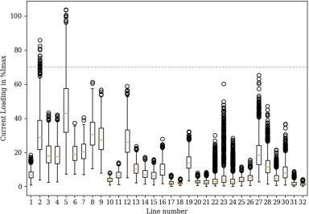
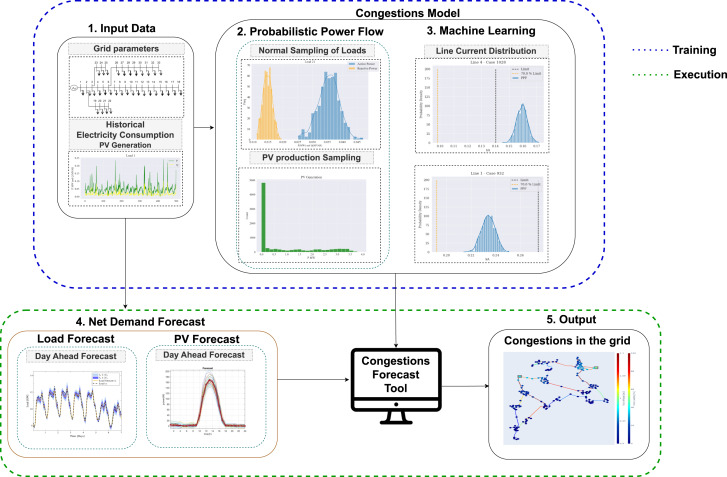

Grid Connection Studies
Steady-state, dynamic (RMS) and EMT studies for offshore wind and renewables, liaising with TSOs, DSOs, and developers across Europe.
Power Systems Engineer | Data Scientist
Power Systems Engineer and Data Scientist with 8+ years connecting offshore wind, renewable generation and large inverter-based loads to European grids in Spain, the UK and Denmark. I lead steady-state, dynamic (RMS) and EMT grid connection studies, working between TSOs, DSOs, developers and consultants to turn grid code requirements into design inputs. I also build Python-based digital tools and analytical frameworks that improve workflows and also make engineering results usable for decision-makers.
Alongside my engineering work, I continue to research AI for power systems, building on my PhD in machine learning for smart distribution grids and an MSc in Data Science. My focus (an interest) is on Graph Neural Networks, Large Language Models and generative AI for grid analysis and optimisation. Recent work includes an LLM-based multi-agent pipeline that extracts and compares grid code requirements across countries.
I am also an active participant in CIGRE events nationally and internationally, engaging with the global power systems industry and research community.
Steady-state, dynamic (RMS) and EMT studies for offshore wind and renewables, liaising with TSOs, DSOs, and developers across Europe.
Python-based analytical frameworks and PowerFactory automation libraries that accelerate grid code studies and make results usable for decision-makers.
Research applying Graph Neural Networks, Large Language Models and generative AI to grid analysis, optimisation, and regulatory compliance.

Monte Carlo simulation tool for assessing how input uncertainties affect power system behaviour during operational and planning phases.

PhD thesis: machine learning frameworks for congestion forecasting and demand-side flexibility optimisation in smart distribution grids with local energy communities.
Notebooks and code exploring power hosting capacity in electrical networks, combining power systems analysis with machine learning to assess grid integration limits for DERs.
CIGRE, 2026
International Journal of Electrical Power & Energy Systems, 2024